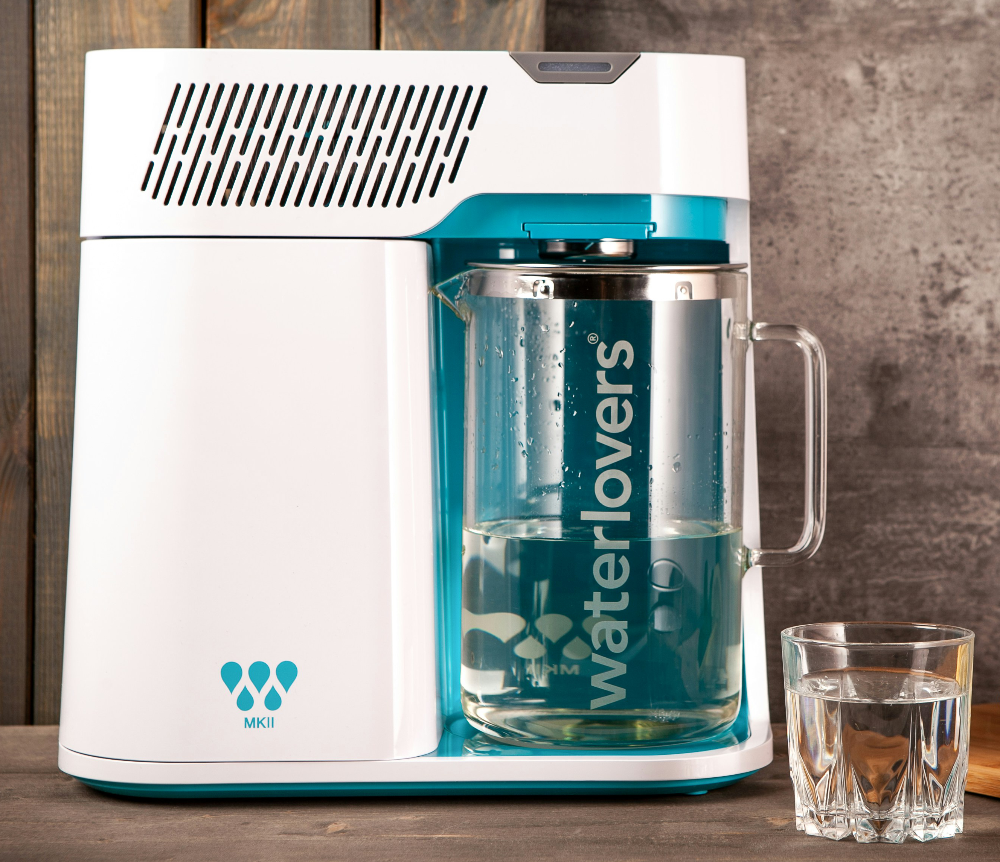

Your water. Your way.

Ensure every drop is pure perfection with a 3-stage filtration system that removes 99% of contaminants.

Customize your pour with an added boost of vitamins, natural botanicals, flavors and more.

From adjusting sweetness to changing water temperatures, personalize your water with a single tap.